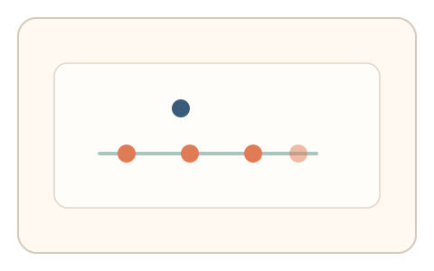
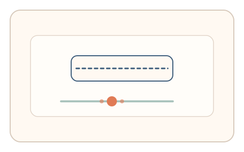

#117
Morphological Analysis - Combination Batches
已扩展
现实节奏对齐
任务移动目标节奏由系统时钟驱动，用户在节奏点完成操作，以节律序列验证真实性。
概念原文
任务中的移动目标节奏由系统时钟驱动，用户需在节奏点完成操作，系统以节律序列与群体基线判定。任务结构为短序列，信号形态为节律序列。
把“真实时间节奏”作为不可伪造的约束。
研究背景
真实时间节奏是不可伪造的外部约束，用户对系统节拍的同步会呈现稳定的误差分布。将节奏点作为操作窗口，可检验在场同步能力。
核心机制
- 移动目标按系统时钟节拍变化。
- 用户在节奏点完成操作。
- 记录节律序列与对齐误差。
- 与群体基线分布比对判定。
用户流程
- 步骤 1：用户观察节奏驱动的移动目标。
- 步骤 2：在节奏点完成操作。
- 步骤 3：系统分析节律序列并判定。
判定信号
对齐误差序列
人类同步存在稳定的偏移与波动。
节律一致性
真实用户的节奏一致性不会过度完美。
判定逻辑
误差序列需落在人类分布区间；过度精准或无波动判异常。
对抗面
- 脚本读取时钟精确同步
- 重放真实用户的节奏序列
防御与缓解
- 随机化节拍间隔与目标路径
- 引入轻微扰动降低固定同步
- 叠加轨迹与停顿信号
可达性与风险
提供更慢节奏与更大目标，允许键盘替代。
- 设备延迟影响同步误差
- 节拍过快导致误拒
可视化状态

状态 1：节奏目标
目标按节奏点移动。

状态 2：节奏操作
用户在节奏点完成操作。

状态 3：序列判定
比较节律一致性与误差。
参考资料
Sensorimotor synchronization
说明节拍同步与误差分布。
Rhythm
说明节律序列与同步能力。